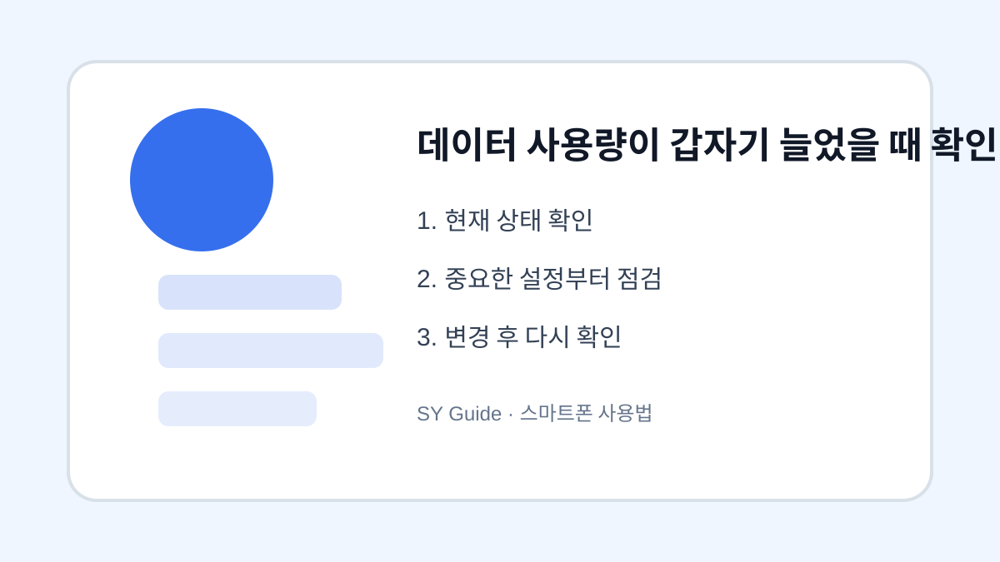

데이터 사용량이 갑자기 늘었을 때 확인 순서
모바일 데이터가 예상보다 빨리 줄어들 때 앱별 사용량과 자동 실행 설정을 순서대로 확인합니다.

요금제 데이터가 갑자기 줄어들면 먼저 어떤 앱이 많이 썼는지 확인해야 합니다. 감으로 앱을 삭제하면 불편만 커질 수 있습니다. 스마트폰 설정의 데이터 사용량 화면을 열면 기간별, 앱별 사용량을 볼 수 있고 원인을 찾는 출발점이 됩니다.
앱별 사용량 확인
동영상 앱, SNS, 지도, 클라우드 백업 앱은 데이터를 많이 쓰는 대표적인 앱입니다. 최근 설치한 앱이나 업데이트한 앱이 있다면 그 앱의 백그라운드 데이터 사용 여부도 봅니다. 사용하지 않는 동안에도 데이터가 나간다면 제한 설정을 고려할 수 있습니다.
자동 업데이트와 백업 점검
앱 자동 업데이트가 모바일 데이터에서도 허용되어 있으면 큰 용량의 업데이트가 진행될 수 있습니다. 사진 백업이나 메신저 파일 자동 다운로드도 마찬가지입니다. 가능하면 와이파이에서만 업데이트와 백업이 되도록 설정하는 것이 안전합니다.
| 원인 | 확인 위치 | 권장 조치 |
|---|---|---|
| 동영상 화질 | 앱 설정 | 모바일에서는 낮춤 |
| 자동 업데이트 | 스토어 설정 | 와이파이만 허용 |
| 사진 백업 | 클라우드 앱 | 와이파이 백업 |
| 백그라운드 데이터 | 앱별 데이터 | 필요 앱만 허용 |
설정을 바꾸기 전 마지막 확인
- 앱별 데이터 사용량 확인하기
- 동영상 앱 화질 설정 낮추기
- 앱 업데이트를 와이파이 전용으로 바꾸기
- 사진 백업과 파일 다운로드 설정 확인하기
- 계속 늘어나면 통신사 사용 내역도 비교하기
데이터 문제는 한 달 요금과 바로 연결되므로 주기적으로 확인하는 것이 좋습니다. 특히 여행이나 외출이 많은 달에는 중간에 한 번 점검하면 초과 사용을 줄일 수 있습니다.
데이터 사용량이 갑자기 늘었을 때에서 먼저 확인할 원인
데이터 사용량이 갑자기 늘었을 때은 증상만 보고 앱 삭제나 초기화를 하기보다 사용량 화면, 최근 설치 앱, 네트워크 상태, 자동 실행 설정을 차례대로 보는 것이 좋습니다.
데이터 사용량이 갑자기 늘었을 때에서 기기별로 달라지는 부분
Android는 설정 앱의 세부 메뉴가 제조사마다 다르고, iPhone은 앱별 설정과 개인정보 보호 메뉴를 함께 봐야 하는 경우가 많습니다. 같은 기능이라도 메뉴 이름이 다를 수 있습니다.
데이터 사용량이 갑자기 늘었을 때 관련 공식 확인처
확인 기준: 2026.06.27 · 작성/검토: SY Guide 편집팀 · 정정 문의: issuebara@gmail.com